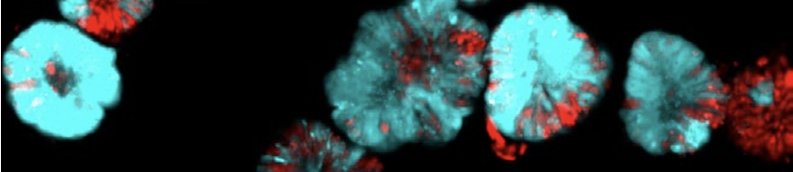
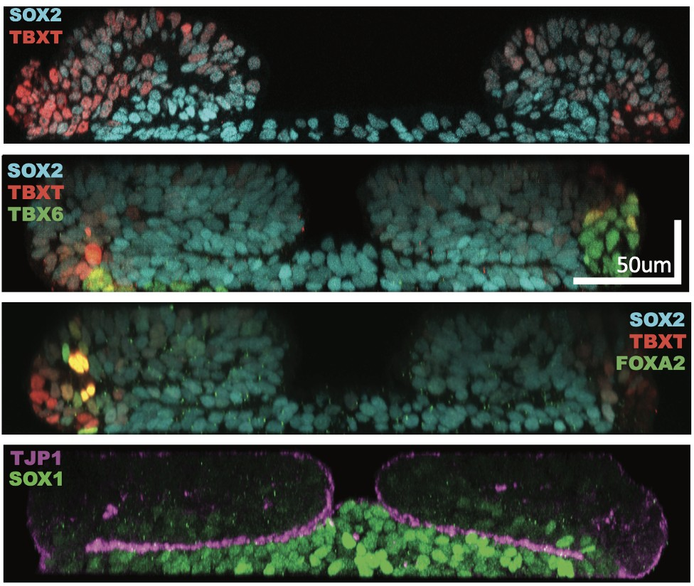
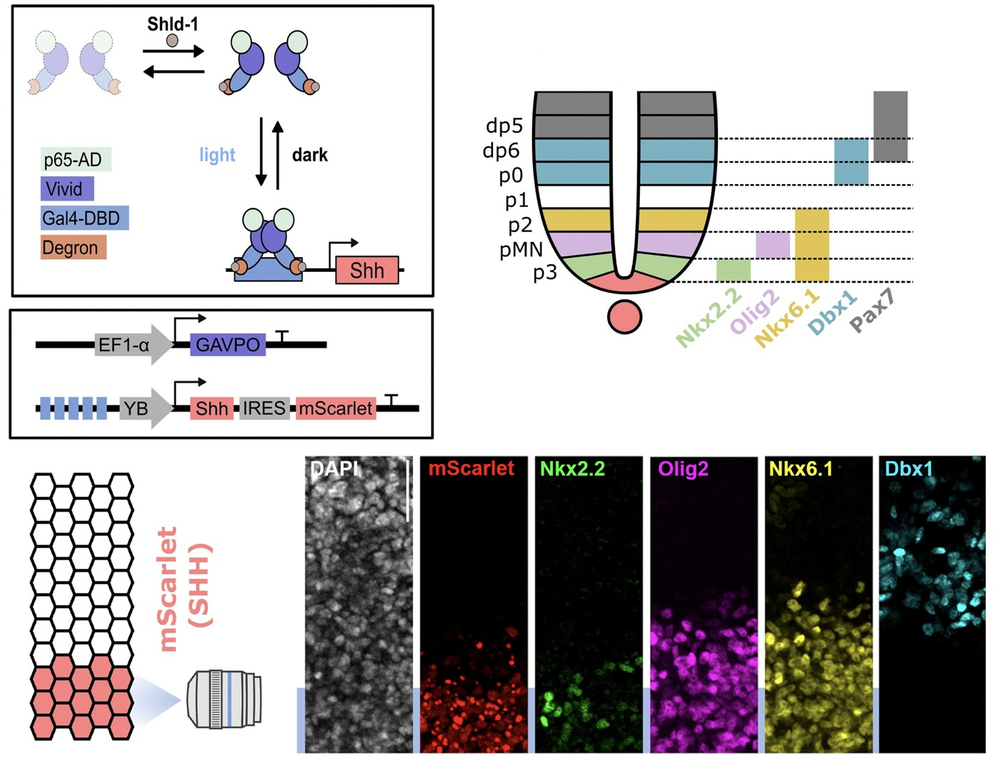
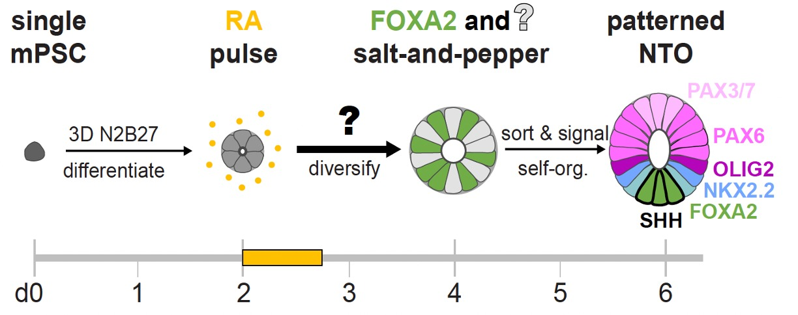

Research
Stem cells and bioengineering
We build spinal cord tissue outside the embryo, from stem cells, then control the signals it receives. Reconstructing a tissue from its parts is the strongest test of whether we understand how embryos form.
We direct mouse and human stem cells to make the cell types of the trunk: spinal cord, notochord and mesoderm. These arise from neuromesodermal progenitors and reproducing the signalling environment those cells experience in the embryo produces them in culture.
We developed a human embryonic stem cell-derived organoid that recapitulates vertebrate trunk formation. These organoids display stereotypic molecular patterning and morphological transitions over 72 hours, generating complex structures from initially flat, homogeneous colonies. This offers a gateway into investigating how spatial constraints and mechanical forces guide differentiation.

To control signals precisely we use light. An optogenetic system produces Sonic Hedgehog on demand and generates gradients that pattern progenitors into ordered domains. It also lets us measure how fast Shh disappears. Its extracellular half-life is under 90 minutes, far shorter than the gene expression it drives, so the gradient is continually rebuilt while patterning proceeds. Both the amount and the duration of exposure determine what a cell becomes.

Organoids raise a different question: how does a tissue self-organise? Starting from single stem cells, a pulse of retinoic acid produces a brief state in which cells express both PAX6 and FOXA2 before resolving into neural or floorplate precursors. Those two factors alone are enough to reconstitute the whole process. Proportions are not fixed in advance. Floorplate cells feed back through BMP signalling to regulate differentiating cells, so each organoid arrives at a similar composition by regulative feedback rather than by predetermined proportions. Symmetry breaking followed by feedback control may be a general mechanism for building tissues with predictable composition.

Publications
Stuart HT, Costantini E, Wang J, et al., Tanaka EM, Briscoe J
Minimal essential requirements for neural tube self-organisation
bioRxiv (2026)
Benzinger D, Briscoe J
Investigating morphogen and patterning dynamics with optogenetic control of morphogen production
Developmental Cell 60:3421-3430 (2025)
Rito T, Libby ARG, Demuth M, et al., Briscoe J
Timely TGFβ signalling inhibition induces notochord
Nature 637:673-682 (2025)
Krammer T, Stuart HT, Gromberg E, et al., Briscoe J, Kicheva A, Tanaka EM
Mouse neural tube organoids self-organize floorplate through BMP-mediated cluster competition
Developmental Cell 59:1940-1953 (2024)
Gouti M, Tsakiridis A, Wymeersch FJ, et al., Briscoe J
In vitro generation of neuromesodermal progenitors reveals distinct roles for Wnt signalling
PLoS Biology 12:e1001937 (2014)